INTERIOR ARCHITECTURE · MUSCAT
Office of
Dr. Khodadadi
Visibility, reflection and living energy.

DESIGNED BY JALAL MASHHADI FARD
SPATIAL ORGANIZATION
Overall plan
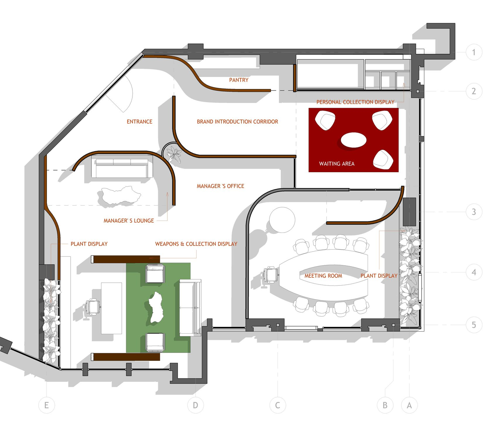
SPATIAL LAYERS
Levels & ceiling
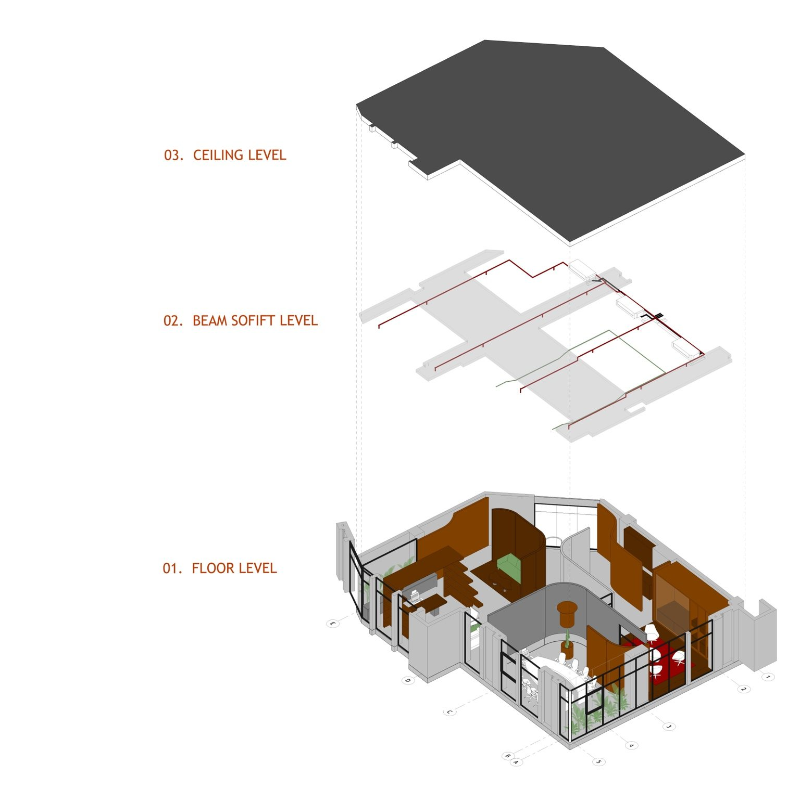
ENTRANCE
Arrival
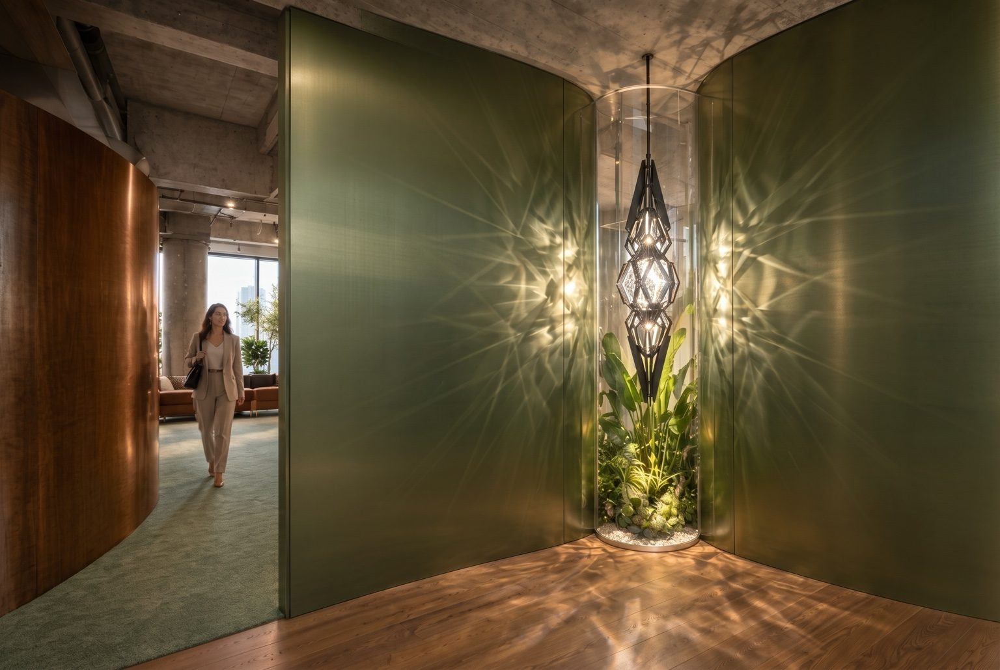
WAITING AREA
A moment of pause
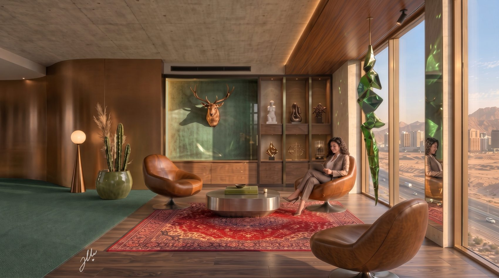
01 / SPACE & IDENTITY
Meeting room
Public access from waiting. Concealed access from the manager’s office. A composed digital presence.
MEETING ROOM / CONCEPT
Public access
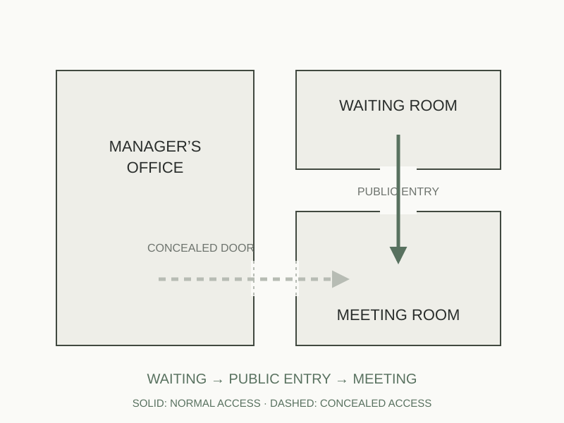
MEETING ROOM / CONCEPT
Concealed manager access
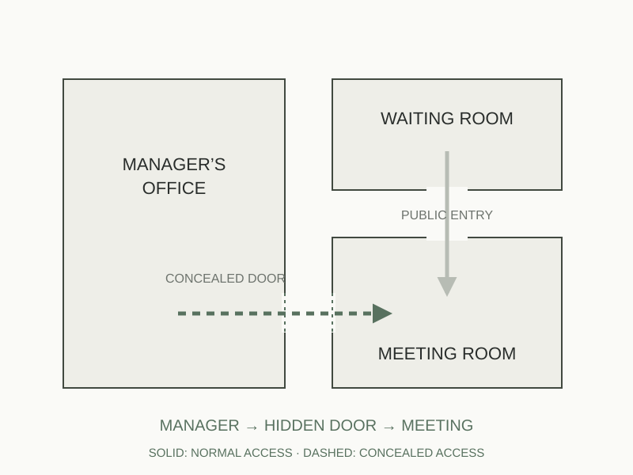
MEETING ROOM / CONCEPT
Controlled visibility
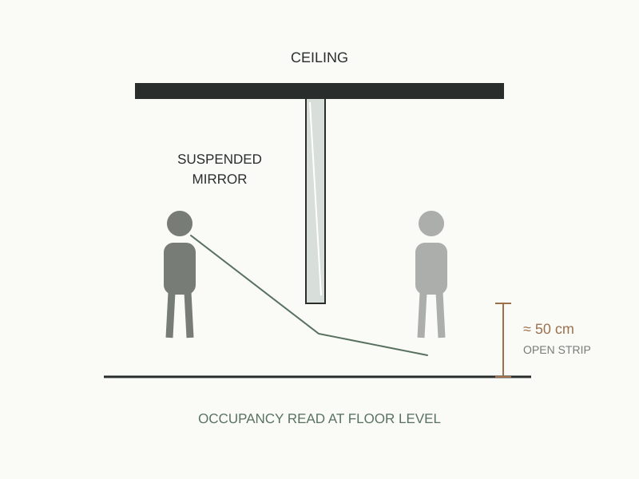
MEETING ROOM / CONCEPT
Reflection & presence
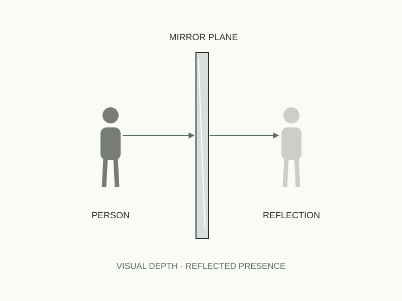
MEETING ROOM / CONCEPT
The online frame
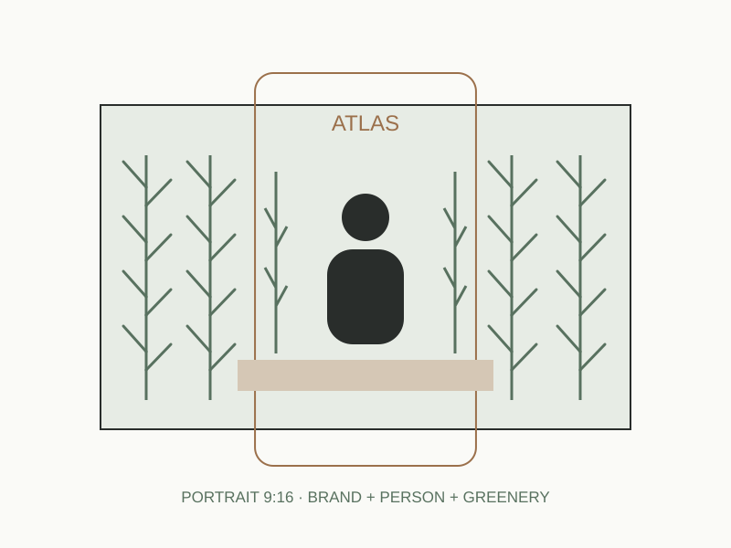
MEETING ROOM / CONCEPT
The planted edge
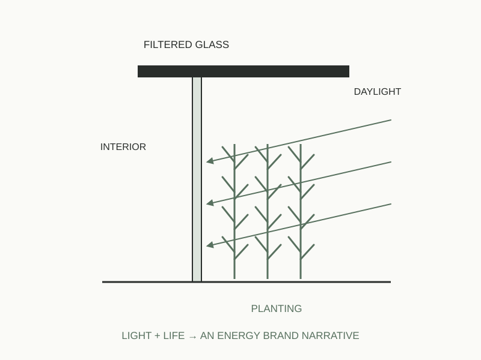
MATERIALS & SPATIAL ELEMENTS
Meeting room details
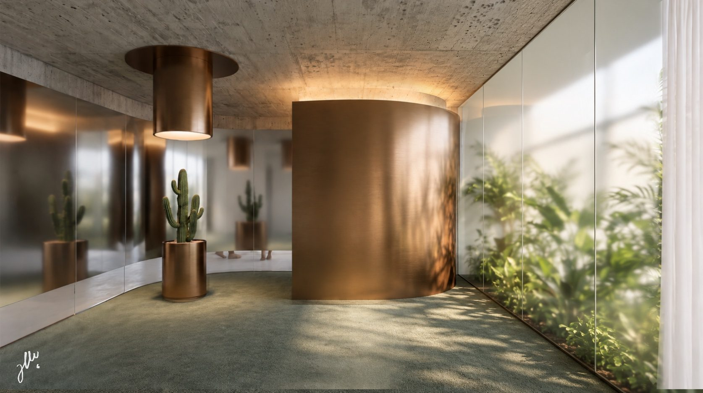
ONLINE MEETING / PORTRAIT 9:16
Designed for the camera
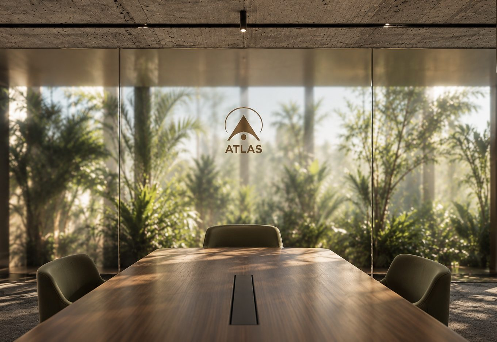
02 / FOCUS & PERSONALITY
Manager’s office
A central presence, framed by a personal collection.
MANAGER’S OFFICE / CONCEPT
Triangular focus
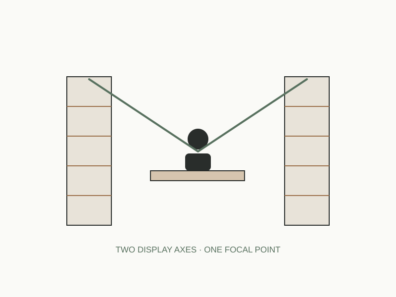
MANAGER’S OFFICE / CONCEPT
The ATLAS pupil
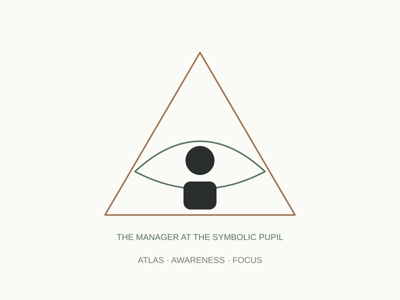
MANAGER’S OFFICE / CONCEPT
Collection as identity
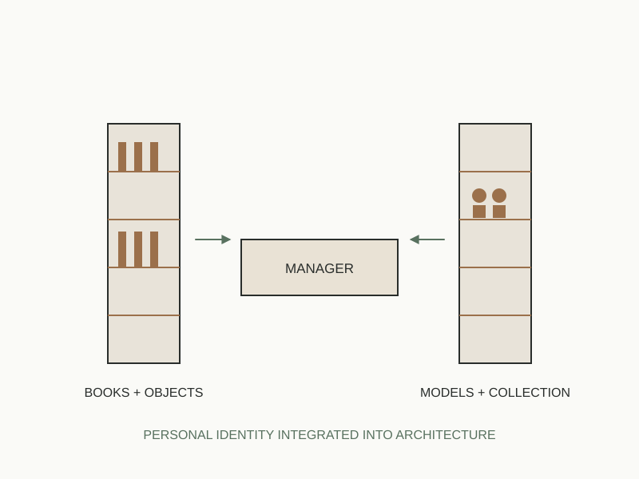
MANAGER’S OFFICE
Spatial layers
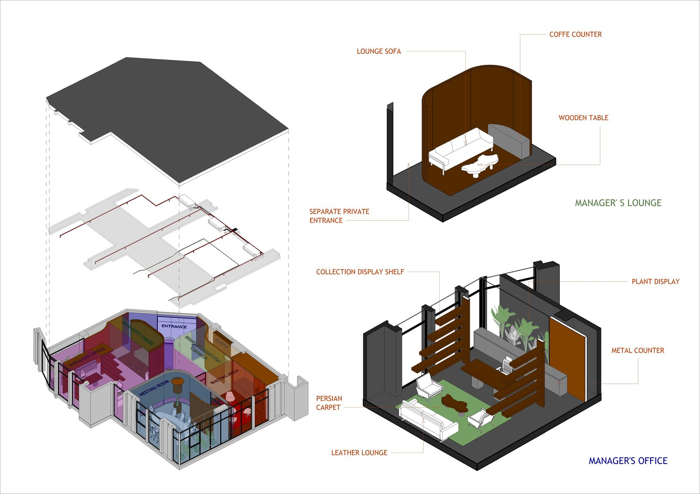
MANAGER’S OFFICE / DETAILS
Authority & hospitality
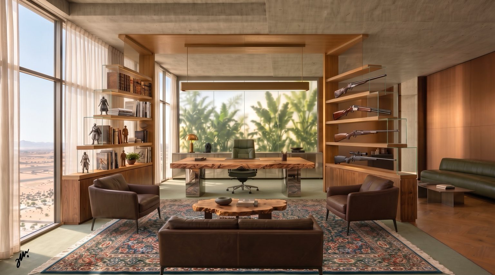
ARCHITECTURE & CREATIVE DIRECTION
Jalal Mashhadi Fard
JalalMFard.com